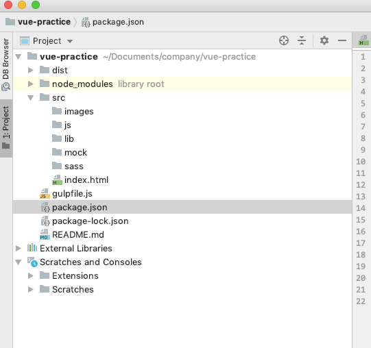

@(工作笔记)
Gulp-record
[TOC]
热个新 gulpfile.js
const gulp = require('gulp')
const uglify = require('gulp-uglify')
const sass = require('gulp-sass')
const connect = require('gulp-connect')
const htmlmin = require('gulp-htmlmin')
const babel = require('gulp-babel')
const plumber = require('gulp-plumber')
const rootPath = 'dist'
// 启动服务器
gulp.task('server', function () {
connect.server({
root : rootPath,
livereload: true,
})
})
// 压缩JS
gulp.task('js', function () {
gulp.src('src/js/**/*.js')
.pipe(plumber())
.pipe(babel({
presets: ['env'],
}))
.pipe(uglify())
.pipe(gulp.dest('dist/js'))
.pipe(connect.reload())
})
// 定义 gulp 任务，压缩 HTML
gulp.task('html', function () {
gulp.src(['src/**/*.html'])
.pipe(htmlmin({ collapseWhitespace: true, minifyCSS: true, minifyJS: true }))
.pipe(gulp.dest('dist'))
.pipe(connect.reload())
})
// 定义任务，编译 sass
gulp.task('sass', function () {
gulp.src('src/sass/**/*.scss')
.pipe(plumber())
.pipe(sass({ outputStyle: 'compressed' }))
.pipe(gulp.dest(rootPath + '/css'))
.pipe(connect.reload())
})
// 将图片、库、模拟的假数据复制到 dist 下
gulp.task('images', function () {
gulp.src('src/images/**/*.*')
.pipe(gulp.dest('dist/images'))
})
gulp.task('lib', function () {
gulp.src('src/lib/**/*.*')
.pipe(gulp.dest('dist/lib'))
})
gulp.task('mock', function () {
gulp.src('src/mock/**/*.*')
.pipe(gulp.dest('dist/mock'))
})
gulp.task('copyfile', ['images', 'mock', 'lib'])
gulp.task('watch', function () {
gulp.watch('src/sass/**/*.scss', ['sass'])
gulp.watch('src/js/**/*.js', ['js'])
gulp.watch(['src/**/*.html'], ['html'])
})
gulp.task('default', ['html', 'js', 'sass', 'copyfile', 'server', 'watch'])
package.json
{
"name": "vue-practice",
"version": "1.0.0",
"description": "",
"main": "gulpfile.js",
"scripts": {
"test": "echo \"Error: no test specified\" && exit 1"
},
"keywords": [],
"author": "",
"license": "ISC",
"dependencies": {
"gulp": "^3.9.1",
"gulp-babel": "^8.0.0",
"gulp-connect": "^5.7.0",
"gulp-htmlmin": "^5.0.1",
"gulp-plumber": "^1.2.1",
"gulp-sass": "^4.0.2",
"gulp-uglify": "^3.0.2"
}
}
dir tree
